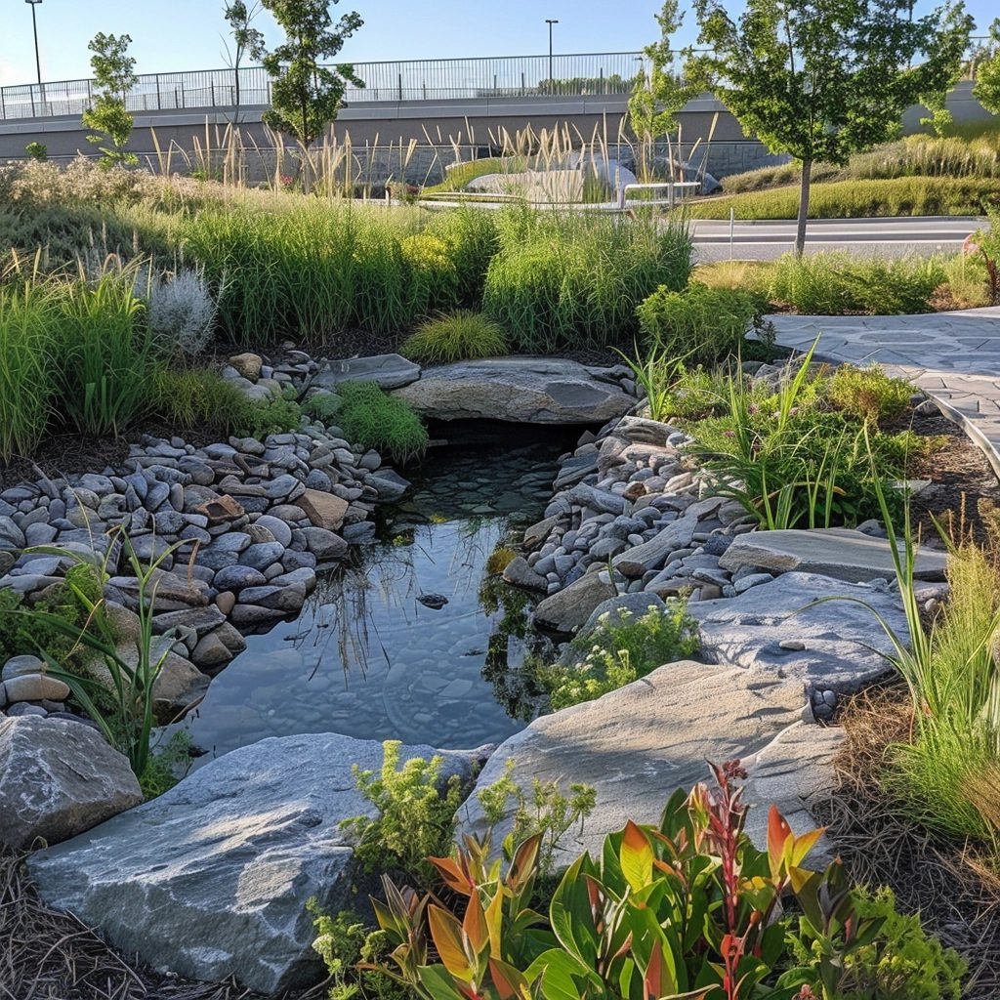
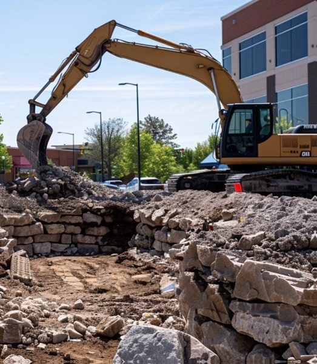
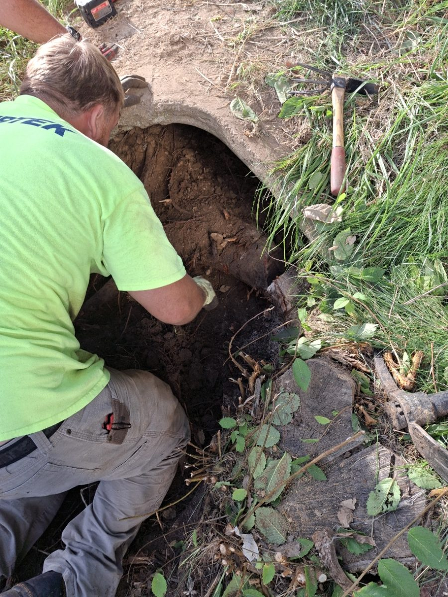
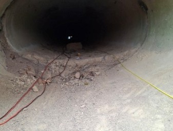
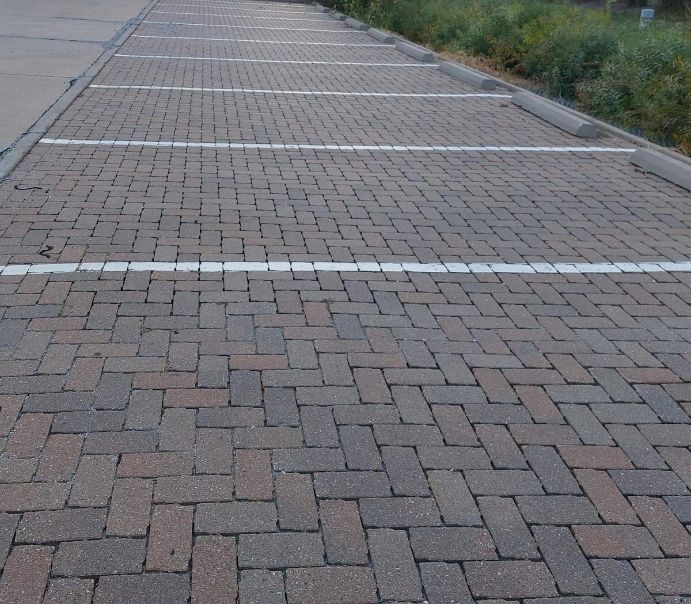

Field services
Inspection, maintenance, repair and construction for every class of stormwater BMP, documented on the SDS BMP Tracker.
19 yearsin stormwater and water resources
CPESC certifiedErosion and sediment control
MS4 program experienceBuilding MS4 programs
St. Louis regionField services based in Ballwin, Missouri

Inspection and reporting
Permit-based field inspections with photo documentation, corrective action plans and agency-ready reports.

Maintenance and native planting care
Sediment and debris removal, structural cleaning, erosion control and vegetation management.

Repair, design and construction
Corrective repair, remediation, retrofits and new facility construction.
Operations and maintenance plans
Inspection schedules, long-term budgeting and site-specific operations and maintenance manuals.
Regulatory consulting
Jurisdictional expertise, agency representation and records management.
Compliance signage
QR-coded asset markers linked to the SDS BMP Tracker.
Underground detention system assessment



Systems we inspect and maintain
- Bioretention and rain gardens
- Detention and retention ponds
- Pervious pavement and concrete
- Infiltration trenches
- Sand filters
- Hydrodynamic separators
- Underground vaults
- Catch basins
- Grates and inserts
- Inlets and outlets
- Drainage channels
- Swales
- Green roofs
